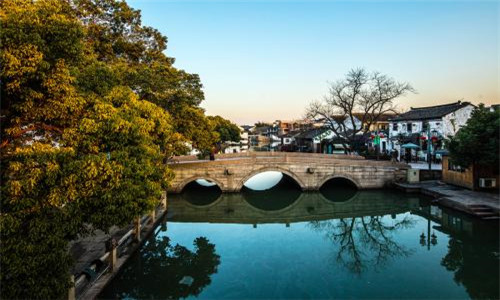
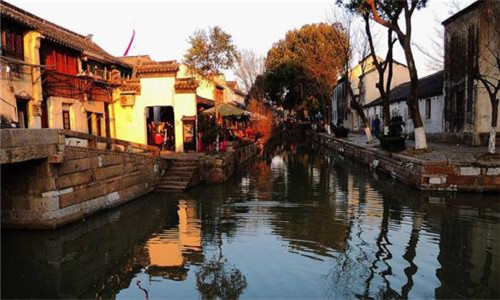
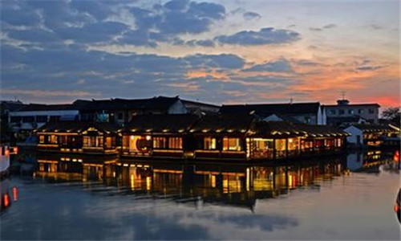
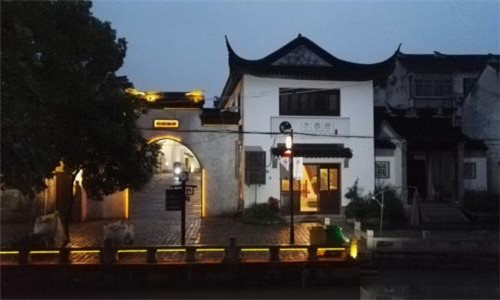
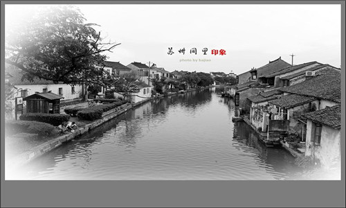

morly旅游网
同里镇距近临上海、浙江等地，是为江南六大著名水乡之一，为五个湖泊环抱，由网状河流将镇区分割成七个岛。古镇风景优美，镇外四面环水。她是江苏省最早，也是唯一将全镇作为文物保护单位的古镇。是江苏省首批历史文化名镇。其中水乡古镇和退思园被列入世界文化遗产预备清单。 同里镇内自成水网，民用水河桥比比皆是，悠悠绿水，水活水清，“家家临水，户户通舟”。形成“水巷小桥多，人家尽枕河”,柳桥通水市，河港入湖田”的独特景观，是江南典型的“小桥、流水、人家”的水乡古镇。
同里风景优美，镇外四面环水，镇内由15条河流纵横分割为7个小岛，由49座桥连接。镇内家家临水，户户通舟；明清民居，鳞次栉比；宋元明清桥保存完好。它以小桥流水人家的格局赢得“东方小威尼斯”的美誉。现存著名的有退思园、耕乐堂、环翠山庄、三谢堂、侍御第、卧云庵、城隍庙、尚义堂、嘉荫堂、崇本堂等园林和古建筑。
退思园
退思园，建于清光绪十一年至十三年。具晚清江南园林建筑风格。退思园布局独特，亭、台、楼、阁、廊、坊、桥、榭、厅、堂、房、轩一应俱全，并以池为中心，诸建筑如浮水上。格局紧凑自然，结合植物配置，点缀四时景色，给人以清澈、幽静、明朗之感。建筑格纵向为横向，自西向东，西为宅，中为庭，东为园。宅分外宅、内宅，外宅有轿厅、花厅、正厅三进。轿厅、花厅为一般接客停轿所用。其退思园被列为世界文化遗产。
崇本堂
崇本堂位于富观街长庆桥北堍，坐北朝南，面水而筑，东与嘉荫堂隔河相望，西与长庆桥等三桥相连，整齐的石驳岸护卫着这座古朴的宅第。如果把同里比作是一座古建筑的博物馆的话，那么崇本堂就是这座博物馆中一件雕刻精致的艺术品，其精湛的技艺和深刻的内涵，让每一位游人赞叹不已。
嘉荫堂
嘉荫堂，位于竹行街尤家弄口，建于民国初年，有四进，门窗梁栋皆雕刻精美。房主柳炳南，北厍人，先于芦墟开设油坊，发迹后迁于同里营建宅第，共耗白银贰万两。与著名爱国诗人柳亚子先生同宗。嘉荫堂主建筑系仿明代结构，俗称“纱帽厅”。
 古风园
古风园位于公园桥东侧、南濠弄内，南与退思园一弄之隔，设在原晶体管厂里。该馆分百床、木雕和古玩三大区，古风园展示的古玩，种类繁多，包括瓷器、铜器、珠玉、文房四宝、紫砂等。每件古玩，都由故宫博物院专家标注年代和名称。木雕戏文故事由四川戏曲专家还原故事，百床、木雕、古玩由作家车前子撰写解说词。
松石悟园
松石悟园，简称“悟园”，即“同里镇松屏石展馆”所在地，古镇区石皮弄中，毗邻吉利、太平、长庆三桥，与珍珠塔景区一墙之隔，由富观桥南行百步即抵。
桥
同里古镇上最富有神话色彩的古桥是富观桥。在此桥的龙门石上，有一幅惟妙惟肖的"桃花浪里鱼化石"的石雕。乌金桥坐落在镇西北郊，是当年苏州到同里的必经之路，也是古镇的重要入口。中元桥又称赌气桥,是一座梁式三孔石桥。
同里的桥以三桥（即太平桥、吉利桥和长庆桥）最有代表性。同里人有过三桥的习俗，取其消灾解难、幸福吉祥之意。太平桥和吉利桥均是乾隆十二年，同里人范景烈等重建的。前者属梁式桥，小巧精致；后者属半月行拱桥，处太平桥与长庆桥之间。长庆桥俗名谢家桥，又称广利桥，是明代同里人陈镛、谢忱改建的。如今走三桥已是游客不可少的项目，使三桥成为同里人气最旺的桥。
 内容整理至网络，如有侵权，请联系我们！1255394075@qq.com